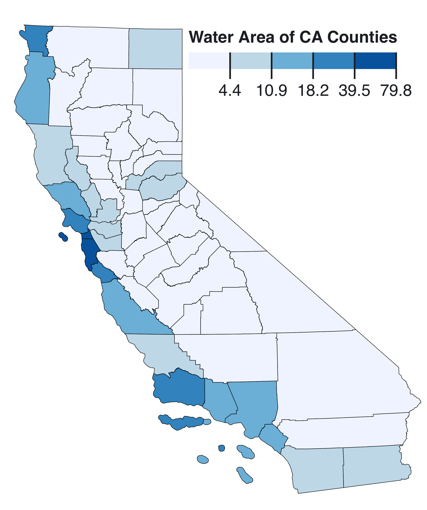
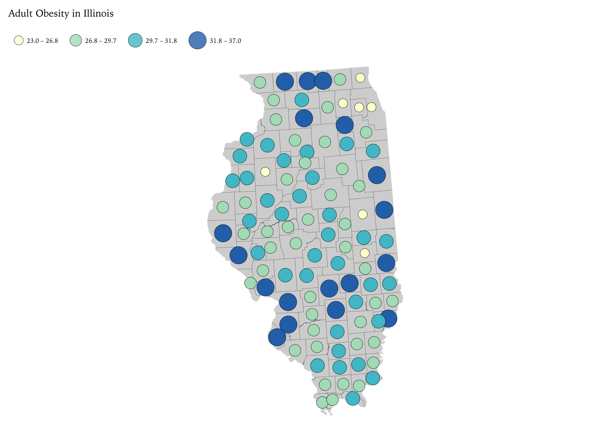
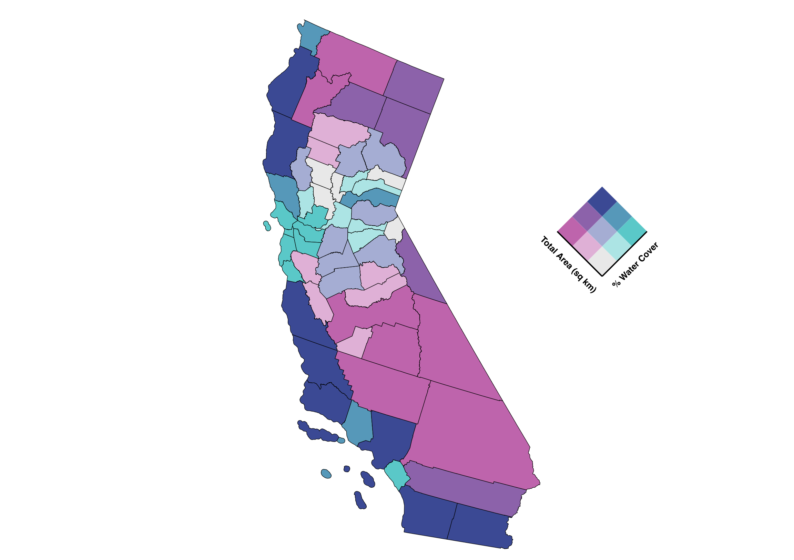
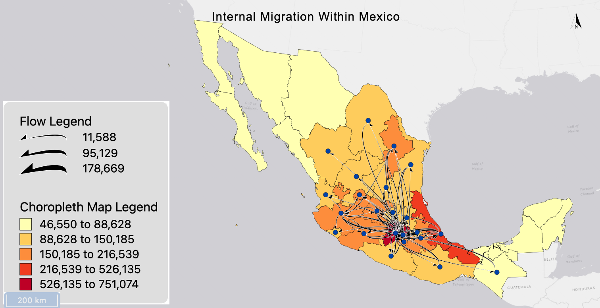
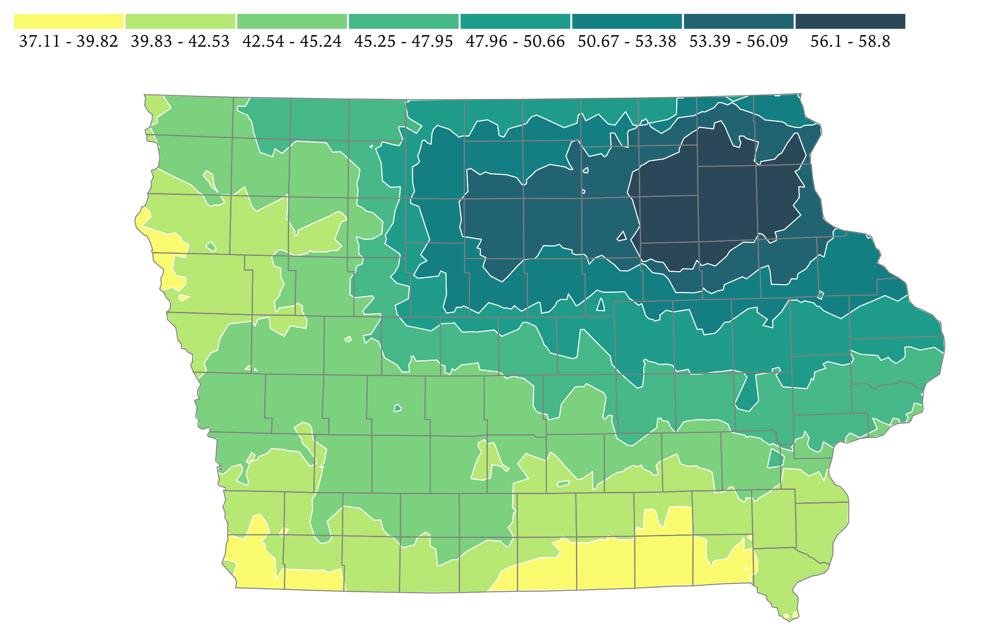

Choropleth MapIn terms of the spatial distribution, all of the highest values are overwhelmingly found in all of California's counties that touch the Pacific Ocean. This goes double for counties that possess islands off the coast. The two largest clusters in terms of counties per cluster are in the Bay Area (San Francisco and San Mateo counties) and the Los Angeles area (Santa Barbara County). The only non-coastal cluster is found in the two counties around Lake Tahoe, in the eastern part of the state (Placer and El Dorado counties). The only real outlier is Modoc County, in the far Northeast. Modoc County is one of only two counties with water coverage over 6% that lack a massive lake. Rather, it contains a few smaller lakes and is not large in area, hence the higher than expected percentage. The reason that the distribution looks the way it does is because of proximity to the ocean. The counties in the North surround the San Francisco Bay, which is why San Francisco and San Mateo counties have the highest % of water cover.

Graduated Symbol MapAs far as the spatial distribution of values go, the lowest values are found in the areas with the highest population density, the Chicago metro area and into the surrounding suburbs. The outliers to this trend can be found in Chanpaign and Coles counties, which have college towns and obesity rates lower than surrounding counties. The rural areas have higher values on average, but the region with the highest values are in south central Illinois. The Chicago metro having a cluster of low values makes sense because obesity, in general, decreases in more urbanized areas. The highest concentration of counties with the highest rates of obesity are found along Illinois's borders with Indiana and Wisconsin.

California Counties by Water Cover and Total AreaWhen it comes to the spatial distribution of values, the counties with high areas and low water cover southeast CA have the highest land areas but the lowest water cover. The counties with low area and high water cover are all clustered around the San Francisco bay, with one outlier in the east due to lake Tahoe. The counties with high area and high water cover are all the counties along the coast outside of the Bay area. The only area with counties that have low area and low water cover are in central eastern CA. Geographically, the presence or absence of one variable does not appear to have an effect on the other one. The counties of CA emcompass all nine values within the bivariate color scheme.

FlowmapThe place that receives the most flows, by far, is Mexico City, the capital. This makes sense because people will naturally migrate to large cities, where there are more job opportunities than in rural areas. The places that send the most flows are other large cities, such as Veracruz and Guadalajara. Other states of Mexico, besides Mexico City, have outflows that exceed inflows. The pattern from a directional standpoint does not seem to favoe one direction versus another. Rather, the flows generally move to the center (Mexico City) from the states surrounding. The flow patterns reflect the general pattern that the choropleth basemap displays. The basemap shows that the capital region receives more people than any state of Mexico, and the flow arrows show that this same region has the highest net inflow. The highest net outflow is found on the outskirts of the data range, in states such as Chiapas or Durango.

Isarithmic MapBased on the above isarithmic map, the Northeast of Iowa recieves the most rainfall by far, with levels decreasing going southwest. Beyone the northeast corner with the highest rainfall, central Iowa's rainfall levels are in the middle in comparison. The driest part of Iowa is the very south edge and a small corner in the northwest.